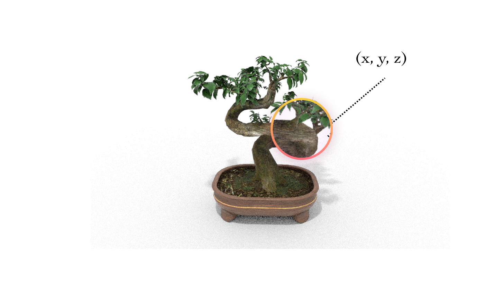
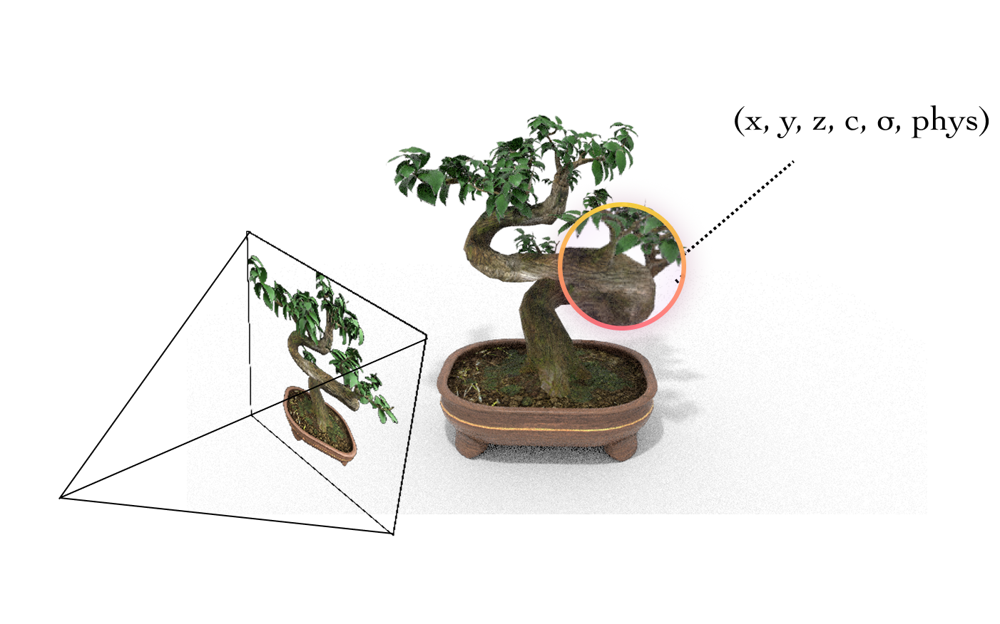

Why learn physics fields?
- Photorealistic 3D reconstructions (NeRF, GS) capture static geometry & appearance but lack physics.
- How can we make the scene move?
- Can we integrate physics?

Rendering + Physics
- Yes! By tagging physics params to each 3D coordinate.
- Can simulate the scene with a physics solver (e.g., MPM).


Related Work: Test-time Optimisation
- Test-time optimization methods are:
- slow.
- scene-specific.
- inaccurate (need good initialization).
Enter Pixie!
- Pixie: predict dense material fields in a single forward pass and generalize across scenes.
- Using (pretrained) visual features!
- Via supervised learning!
Method Overview
- Multi-view RGB encoded by NeRF with distilled CLIP features.
- 3D U-Net predicts dense material fields.
- Gaussian splats + MPM solver yield real-time simulations.
PixieVerse Dataset
Assets
0
Super-classes
0
Material Models
0
Annotations
E, ν, ρ, ID
Quantitative Results
- 2.2–4.6× higher Gemini-Pro realism than baselines.
- Runs 10³× faster than optimisation-heavy methods.
- State-of-the-art PSNR / SSIM gains on PixieVerse.
Qualitative Results
- Pixie simultaneously recovers discrete material class , E, ν, ρ with a high degree of accuracy.
Qualitative Results
- Pixie produces stable, physically plausible motion and correct material attribution.
- Baselines suffer from stiffness errors, collapse, or noisy artefacts.
Qualitative Results
- Pixie produces stable, physically plausible motion and correct material attribution.
- Baselines suffer from stiffness errors, collapse, or noisy artefacts.
Zero-shot Transfer to Real Scenes
Ablation: Why does Pixie generalize?
- Pretrained CLIP features are key for sim2real transfer.
- Ablating CLIP and using RGB or occupancy features significantly degrades performance:
Conclusion
- Pixie bridges 3D vision and physics with real-time, accurate and generalizable inference.
- Project Website: pixie-3d.github.io
@inproceedings{le2025pixie,
title={{Pixie}: Fast and Generalizable Supervised 3D Physics Learning from Pixels},
author={Le, Long and Lucas, Ryan and Wang, Chen and Chen, Chuhao and Jayaraman, Dinesh and Eaton, Eric and Liu, Lingjie},
year={2025}
}